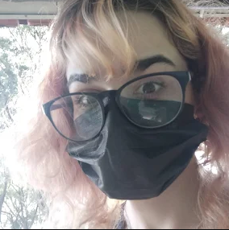

Home

Paloma Machado Martin
Áreas de interesse:
Ilustração 2D, animação, pixelart e design
Sobre mim:
Tenho 17 anos e moro em Curitiba-Paraná. Estudo desenho a aproximadamente dois anos e pixel art a um ano. Trabalho independentemete ou em equipe. Dentre minhas caracteristicas também estão flexibilidade, capacidade de adaptação, comunicação e organização. O meu maior ponto fraco é a minha dificuldade de lidar com confronto porém com boa comunicação e trabalho em equipe, isso não será um problema.